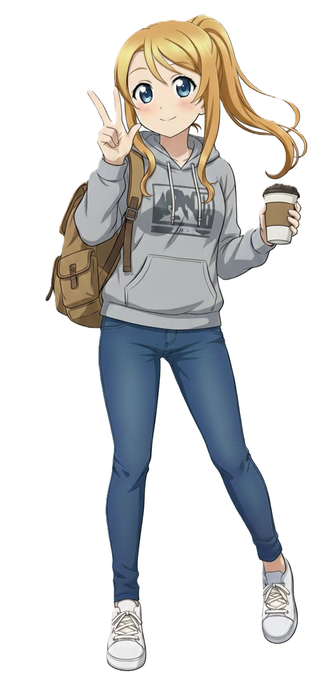

박라미 3호선
Park Rami | 朴喇美 | Sunao Rami
| 박라미 Park Rami |
|
|---|---|
|
 기본
SD
효빈교통공사 3호선 공식 마스코트
|
|
| 이름 | 박라미 (Park Rami) 日本名: Sunao Rami (直尾 喇美) |
| 나이 | 21세 (2004년생) |
| 생일 | 2월 9일 [1] |
| 신분 | 엽월대학교 경영대학 경영학과 2학년 (재학) |
| 신장 | 158cm |
| 출신지 | 효빈광역시 동구 사가당동 |
| 학력 |
사가당초등학교 (졸업) 중수여자중학교 (졸업) 중수여자고등학교 (졸업) 엽월대학교 (경영학 / 재학) |
| 가족 관계 | 부모님, 오빠 |
| MBTI | ENTJ (대담한 통솔자) |
| 별명 | F라미, 자칭 쿨뷰티, F학점의 요정, 노란색 허세왕, 빵순이 |
| 성우 |
日: 이시카와 유이 韓: 이새아 |
"이건... 도시의 맥박이야." - 신호대기 중인 지연 열차를 카메라에 담으며
"F학점? 훗, 내 성적표의 F는 Fail이 아니야. Framing의 F지." - 학사경고장을 마스킹 테이프로 꾸미며
"사능동 갓 구운 식빵의 결이... 내 인생보다 부드럽고 아름다워."
1. 개요
효빈권 광역전철 3호선을 상징하는 마스코트 캐릭터입니다. 직업은 대학생이며, 효빈시 자타공인 최고 명문 사립대인 엽월대학교 경영학과에 무려 '현역'으로 입학해 재학 중인 수재입니다. 3호선 최초 개통일인 2월 9일이 생일입니다.
3호선의 이미지 컬러인 노란색(#FFCC11)과 찰떡같이 어울리는 화려한 금발 머리가 트레이드마크입니다. 도회적이고 차가운 '자칭 쿨뷰티 퀸카' 기믹으로 일본 팬덤에서는 초기 인기 투표 1위를 휩쓰는 기염을 토했습니다. 하지만 파면 팔수록 덕질이 전공 수업을 이기는 구조적 결함을 안고 있으며, 오글거리는 감성과 허세로 가득 찬 인스타그램 피드를 자랑하는 명랑한 빵순이 여대생임이 밝혀져 유쾌한 갭 모에를 형성하고 있습니다.
2. 상세 설정
2.1. 성격 및 배경: 감성과다 쿼터제 쿨뷰티 (그리고 허세)
표면적으로는 범접할 수 없는 '얼음공주 쿨뷰티'를 표방합니다. 엽월대 캠퍼스 내에서도 눈에 띄는 화려한 외모에, 경영학도 특유의 '효율'과 '마케팅적 사고'를 입에 달고 삽니다. 동기들이 밥 먹자고 해도 "미안, 난 지금 나만의 골든 타임(프레이밍)을 쫓아야 해서."라며 차갑게 돌아서는 일이 다반사입니다.
이러한 독보적인 분위기와 천연 금발은 그녀가 미국계 쿼터(Quarter) 한국인이라는 배경에서 기인합니다. 과거 주한미군으로 한국에 왔다가 할머니의 미모에 홀딱 반해 제대 후 효빈시에 정착해버린 미국인 할아버지의 로맨틱한 유전자 덕분입니다. 덕분에 3호선 마스코트 중 유일하게 이국적인 비율을 자랑합니다. 가끔 당황하면 본인도 모르게 서툰 영어 감탄사가 튀어나오는데, 본인은 이를 "글로벌 마케팅적 마인드가 몸에 배어버린 부작용"이라며 필사적으로 허세를 부리곤 합니다.
실상은 그 누구보다 '오늘만 사는' 극강의 감성파이자 허세러입니다. 특히 '연출'과 '브랜딩(자아도취)'에 미친 듯이 집착하여, 비 오는 날 지하철역 스크린도어를 찍어놓고 인스타에 #비오는날 #도시의눈물 #메탈릭한영혼의울림 같은 심오한 해시태그를 달아야 직성이 풀립니다. 무엇보다 해가 질 무렵인 '골든 아워'가 다가오면 이성 회로가 마비되며, 교수님이 출석을 부르든 말든 카메라를 들고 강의실 뒷문으로 탈주해 버리는 '감성 폭주'를 주기적으로 일으킵니다.
2.2. 학업 및 능력
명문 엽월대에 당당히 합격할 정도로 기본적인 머리는 비상하지만, 현재 뇌 용량의 90%를 '사진 구도'와 '어느 빵집 빵이 더 맛있는가'에 할애하고 있습니다.
| 구분 | 상세 내용 |
|---|---|
| 학업 성향 |
명문대생의 짬바 + 사진/콘텐츠 감각 SSS급 경영 전공: C+ ~ B0 교양(사진학): A+ 통계학: F 종합 GPA 3.0 언저리 (아슬아슬한 학사경고 방어선) |
| 특기 | 스냅/풍경 사진 촬영, 다꾸(다이어리 찢어지게 꾸미기), 4개 국어 프리토킹 [2] |
| 철덕 레벨 |
B+ (감성 철도형·풍경 덕후) 열차의 모터 제원이나 스펙엔 큰 관심이 없습니다. 오직 '노을을 등지고 달리는 전동차의 실루엣' 등 감성적인 철도 풍경에만 환장합니다. |
엽월대 경영학과라는 타이틀이 무색하게 전공 성적은 위태로운 수준입니다. 그 정점을 찍은 사건이 바로 1학년 1학기 '경영통계학 F학점 참사'입니다. 효빈교통공사의 3호선 신형 전동차가 국내 최초로 시운전을 한다는 소식을 듣고, "지금 이 첫 주행의 프레이밍을 담지 못하면 내 예술 혼이 죽는다!"라며 전공필수 기말고사를 장렬하게 포기해 버린 것입니다.
이후 교수님 메일로 자기가 찍은 신형 열차 고화질 사진 30장과 함께 '이것이 진정한 마케팅 현장 실습이 아니겠습니까?'라는 당찬 소명서를 보냈으나 가차 없이 F를 맞고 말았습니다. 어쩌면 당연한 결과일지도 모릅니다. 그런데도 라미는 학사경고 통지서를 다이어리에 붙이고 화려한 마스킹 테이프로 꾸민 뒤 "위기는 곧 기회다★"라고 적어두는 소름 돋는 긍정 마인드를 과시했습니다.
2.3. 정치 성향
- 對 윤대환 (전 시장): 분노를 넘어선 혐오. 정치적 신념 때문이 아닙니다. 윤대환 시장 재임 시절, 무리한 예산 삭감으로 인해 3호선 열차 지연 운행과 고장이 밥 먹듯이 발생했는데, 이 때문에 라미의 철저한 '출사(사진 촬영) 스케줄'이 꼬여버리기 일쑤였기 때문입니다. 특히 자기가 계산해 놓은 완벽한 '골든 아워'에 열차가 10분 연착되어 역광 타이밍을 놓쳤던 날, "내 완벽한 셔터 찬스를 망친 저 자는 시장 자격이 없다!"며 크게 분노했습니다.
- 對 박효빈 (현 시장): 열렬한 지지 (덕질 친화적 시장). 현 박효빈 시장(1996년생)이 취임한 후, HAF(효빈 애니메이션 페스티벌) 등 각종 서브컬처 행사를 전폭적으로 지원하고 지하철 연장 운행을 실시해 준 덕분에 라미의 문화생활 질이 수직 상승했습니다. HAF 기간마다 고퀄리티 코스프레어들을 촬영하느라 정신이 없으며, "역시 예술과 심연을 아는 분이야말로 진정한 지도자다"라며 무한 찬양을 보냅니다.
2.4. 외형 및 디자인 (공식 로고 vs 현실 전신)
박라미의 외형은 3호선의 상징색(#FFCC11)에 맞춘 화려한 금발 하이 포니테일과 맑고 둥근 파란색 눈동자를 지녀 비주얼 자체는 도회적인 '쿨뷰티'의 정석과도 같아 보입니다. 하지만 그녀의 전신 일러스트와 공식 로고 사이에는 묘한 갭 모에가 존재하며, 이는 박라미를 귀여운 '자칭 쿨뷰티 호소인'으로 만드는 결정적인 근거가 됩니다.
📸 공식 로고: 철저히 포장된 쿨뷰티
공식 원형 로고 속의 박라미는 '효빈 도시철도 3호선 마스코트'라는 권위 있는 틀 안에서, 차분하고 정돈된 '쿨뷰티'의 이미지로 철저하게 포장되어 있습니다. 오른쪽 눈을 찡긋 윙크하고는 있지만, 이는 그녀가 '도회적이고 여유로운 매력'을 어필하기 위해 고도의 계산 끝에 던진 제스처라는 주장이 지배적입니다. 로고의 깔끔한 구성과 어우러져, 3호선의 세련되고 도시적인 이미지를 완벽하게 대변하는 엘리트 마스코트처럼 보입니다.
👻 현실 전신: 누가 봐도 명랑한 빵순이
그러나 공식 전신 일러스트를 마주하는 순간, 로고 속의 쿨뷰티는 온데간데없이 사라집니다. 편안한 회색 후드티에 쫙 빠진 블루 스키니진, 하얀색 스니커즈 차림은 누가 봐도 지극히 캐주얼한 '명랑한 여대생'의 모습입니다. 오른손에 든 테이크아웃 커피는 도회적인 프레이밍을 위한 소품이라기보다는, '빵 먹을 때 마실 생명 유지 장치'에 가깝습니다.
무엇보다 해맑게 볼을 붉히며 손가락 브이(V) 사인을 그리는 저 표정에서는 시크함이나 도도함은 전혀 찾아볼 수 없습니다. 등에 멘 커다란 갈색 백팩 안에는 두꺼운 경영학 전공 서적보다는 사능동에서 쓸어 온 '갓 구운 식빵'과 '초코 소라빵'이 터지기 직전까지 꽉꽉 들어차 있어, 그녀가 빵 냄새를 쫓아 캠퍼스를 휘젓고 다닌다는 목격담을 훌륭하게 증명해 줍니다. 가끔 휴게 시간에 빵을 우물거리며 승강장 스크린도어 너머로 노을을 아련하게 쳐다보는 모습이 자주 목격되곤 합니다.
2.5. 목소리 및 성우 연기
'자칭 쿨뷰티'라는 설정에 걸맞게 한일 양국 모두 지적이고 우아한 누님 톤, 혹은 감정이 절제된 톤을 구사하는 훌륭한 성우들이 배정되었습니다. 문제는 라미의 속알맹이가 '감성에 살고 허세에 죽는 빵순이'라는 점입니다. 이 때문에 엄청나게 진지하고 고급스러운 목소리로 엉뚱한 소리를 남발하는 기적의 언밸런스함이 발생하며 팬들을 열광시키고 있습니다.
한국판 담당 성우인 이새아 님은 우아하고 지적인 쿨뷰티 계열 목소리로 유명합니다. 평소 캠퍼스를 거닐 때나 라이브 방송을 켤 때는 이 우아한 목소리를 한껏 끌어올려 도도한 연기를 펼칩니다. 하지만 '골든 아워'를 놓치거나 참담한 성적표를 마주하는 순간, 그 특유의 지적인 아우라가 와장창 박살 나며 현실 여대생의 처절한 비명을 지르는 연기가 압권입니다. 한 번 무너지면 하이톤으로 오열하는데 그 갭이 엄청난 매력 포인트입니다.
일본판 담당 성우인 이시카와 유이 님은 감정이 억눌린 전사나 처절하고 비장한 연기의 끝판왕으로 불립니다. 덕분에 라미가 무언가에 감명을 받을 때마다 심각하게 비장해지는 부작용이 속출합니다. 예를 들어 사능동에서 갓 구운 바게트를 한 입 베어 물 때, 마치 인류의 명운이 걸린 결전을 앞둔 전사처럼 처절하고 애절한 목소리로 "이 바게트의 텍스처... 마치 구원받지 못한 내 전공 학점 같아..."라고 읊조립니다. 빵 하나 먹는데 세계관이 멸망할 것 같은 이 훌륭한 연기 낭비(?)에 팬들은 극찬을 아끼지 않습니다.
3. 인간 관계
영혼의 단짝이자 구제 불능의 'F학점 듀오'입니다. 임세하가 술자리에서 "야... 나 신형 모터 뜯어보는 거 구경하다가 전공 F 받았어..."라고 고백했을 때, 라미가 소주잔을 탁 내려놓으며 "난 완벽한 프레이밍(구도) 잡으려고 철교에 매달려 있다가 통계학 F 받았어."라고 화답했습니다. 둘은 서로를 껴안고 "학점 따위는 기득권이 만든 허상에 불과해!"라며 눈물을 흘렸다는 슬프고도 웃긴 일화가 있습니다.
엽월대(라미) vs 해운대(노아)라는 '비(非)효빈대 아웃사이더 연합'의 든든한 동지입니다. 노아가 매일 밤샘 조별과제로 다크서클이 턱까지 내려와 고통받을 때, 라미가 "네 PPT는 심미성이 떨어져. 비켜봐."라며 현란한 디자인 감각으로 템플릿을 심폐 소생시켜 주는 츤데레 매력을 종종 보여줍니다.
고등학교 윗 기수 선배입니다. 하루빈이 뺀질거리며 "우리 라미~ 예쁜 사진 찍는 것도 좋지만 학점은 좀 챙겨야지? F가 뭐니 F가~" 하고 깐족거리면, 라미는 특유의 쿨뷰티 표정을 무너뜨리지 않고 유창한 불어나 스페인어로 우아하게 맞받아치는 환상의 티키타카를 보여줍니다.
4. 특수 설정 및 트리거
🎙️ 마성의 유이 내레이션 모드 (Yui Narration)
엽월대 경영학과 전공 수업 발표 시간, 라미가 마이크를 잡으면 강의실의 공기가 달라집니다. 일본어판 성우인 이시카와 유이 특유의 극도로 차분하고 애절한 독백 톤이 빙의되어 프레젠테이션을 시작하기 때문입니다.
"재무제표의 숫자들... 그것은 기업이 흘린 피와 땀의 궤적. 우리는 지금, 자본주의라는 이름의 무한한 궤도를 달리는 가엾은 열차와도 같습니다..."
이 엄청난 감성의 톤으로 발표를 하면 떠들며 스마트폰을 보던 학생들도 홀린 듯이 조용해지고, 깐깐한 교수님마저 감동하여 고개를 끄덕이게 만드는 기적의 아우라를 뿜어냅니다. 하지만 발표 대본을 다시 읽어보면 경영학적 알맹이는 전혀 없는 감성적인 문구들뿐이라 최종 학점은 기가 막히게 C+ 언저리에 머물게 됩니다.
🌅 골든 아워의 통제 불능 망령
해가 뉘엿뉘엿 넘어가며 온 세상을 황금빛으로 물들이는 '골든 아워(Golden Hour)'가 되거나, 비가 추적추적 내려 감성이 폭발하는 날씨가 되면 라미의 이성 제어 장치가 완전히 작동을 멈춥니다.
"이 빛깔... 이 습도... 오늘 이 순간이 아니면 영원히 필름에 담을 수 없어!"라며 조별 과제 회의 도중 카메라만 들고 훌쩍 탈주하거나, 중요한 약속에 2시간씩 늦는 일이 다반사입니다. 그녀의 인스타그램에는 그렇게 열정을 다해 찍은 숨 막히는 감성의 3호선 철도 사진이 가득하지만, 그 대가로 출석 점수는 이미 마이너스를 향해 달려가고 있습니다.
5. 여담
- [비주얼] 유니폼이 억제해온 모델급 기럭지의 실체: 평소 3호선의 노란색 포인트가 들어간 단정한 유니폼을 입었을 때도 비율이 좋다는 소리를 들었으나, 최근 해변가에서 찍힌 수영복 사진 한 장으로 그녀의 우월한 기럭지가 온전히 드러났습니다. 쿼터 한국인 특유의 길쭉길쭉한 팔다리와 B83 - W59 - H84의 군더더기 없는 탄탄한 몸매는 그야말로 살아있는 마네킹 수준입니다. 특히 금발 포니테일에 네이비&베이지 원피스 수영복을 매치하고 아이스 아메리카노를 든 자태는 패션 잡지 표지 같다는 찬사가 쏟아졌습니다. 2호선 하루빈이 '압도적 볼륨감'이라면, 박라미는 '완벽한 비율'로 승부하는 효빈철도의 양대 산맥으로 꼽힙니다.
- [밈] 사능동 빵집 드러머와의 평행이론: 3호선의 이미지 컬러가 노란색(#FFCC11)인데다, 라미 본인이 타의 추종을 불허하는 중증 빵순이라는 설정이 겹치면서 서브컬처 팬덤 사이에서 엄청난 밈이 탄생했습니다. 바로 애니메이션 뱅드림!의 노란색 이미지 컬러 캐릭터 '야마부키 사아야'와 영혼의 쌍둥이 취급을 받는 것입니다. 라미는 스트레스받는 날이면 북구 사능동의 로컬 빵집까지 원정을 가 빵을 쓸어 담는 기행을 벌이곤 합니다. 팬아트에서는 도도한 쿨뷰티 표정의 라미가 양손에 드럼 스틱 대신 바게트 빵을 쥐고 있거나, 베이커리 앞치마를 입고 있는 모습이 자주 그려집니다. 밴드 동아리방 근처에서 드럼 소리만 들리면 본인도 모르게 어깨를 들썩이며 "포피파 피포파...!" 같은 주문을 중얼거린다는 귀여운 괴담도 돌고 있습니다.
- 글로벌 인재의 뼈아픈 알바 썰: 외국어(영어, 일본어, 중국어)가 원어민 수준으로 매우 유창합니다. 대학 입학 직후 효빈국제공항역 안내 센터에서 단기 아르바이트를 한 적이 있는데, 화려한 비주얼과 다개국어 스킬로 외국인 관광객들의 인증샷 명소로 등극했었습니다. 그러나 근무 중 창밖으로 지나가는 특별 도장 비행기를 찍겠다고 안내 데스크를 30분간 비워두는 바람에 안타깝게도 당일 저녁 통보로 아르바이트를 그만두게 되었습니다.
- 숨겨진 안경 미소녀: 사진 속 구도를 해친다는 이유로 평소 안경 쓰는 것을 극도로 꺼리며 렌즈를 고집합니다. 하지만 밤새워 다이어리를 꾸미느라 피곤한 다음 날, 어쩔 수 없이 뿔테 안경을 쓰고 등교하면 평소의 쿨뷰티 이미지에 지적인 매력이 더해져 캠퍼스 내의 이목을 싹쓸이합니다. 물론 본인은 다가오는 관심들을 차갑게 무시하곤 합니다. 공식 피규어 굿즈에 '안경 파츠'가 은밀하게 포함된 것은 이러한 안경 쓴 라미를 열렬히 지지하는 팬들의 강력한 건의 덕분입니다.
- 사능동 골목상권 지킴이: 동네 상권 살리기에 은근히 진심입니다. 사능동 골목 상권이 쇠락해가는 것을 안타까워하며, 본인의 팔로워 10만 명짜리 감성 인스타그램 계정을 통해 사능동의 숨겨진 로컬 빵집들을 무료로 적극 홍보해 주는 '사능동 앰버서더' 역할을 자처하고 있습니다. 덕분에 빵집 사장님들에게는 거의 구세주 취급을 받으며 방문할 때마다 소보로빵 하나씩을 서비스로 얻어오는 훈훈한 일상을 보내고 있습니다.
각주
- 3호선 최초 개통일(1994.2.9)에서 따온 상징적인 날짜입니다.
- 3호선이 공항과 터미널을 경유하기 때문에 외국어 능력이 필수라는 훌륭한 설정입니다. 한국어, 영어, 일본어, 중국어가 가능하지만, 일본어는 철도 잡지와 애니메이션(특히 밴드물)을 자막 없이 보기 위해 섭렵한 생존형 오타쿠 일본어일 확률이 농후하다는 유쾌한 추측이 있습니다.